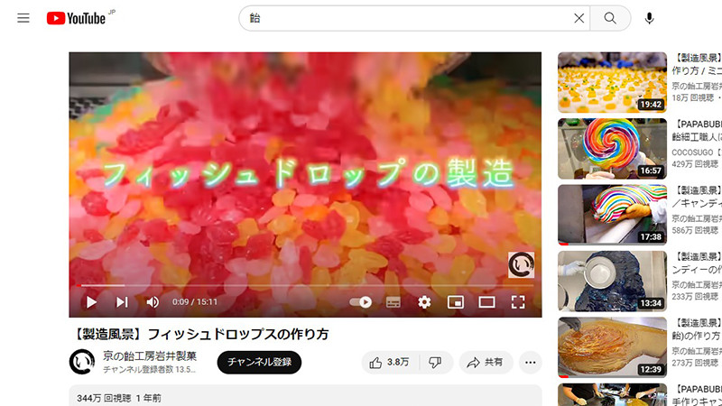

フィルタリングとモーダルウィンドウの実装
全て
音楽
飴
料理
Webサイト
米津玄師 - 春雷 Kenshi Yonezu - Shunrai
[Official Music Video] Perfume「VOICE」
King Gnu - 白日
【製造風景】京の露(べっこう飴)の作り方
【製造風景】錦玉の作り方 飴／キャンディ
【製造風景】フィッシュドロップスの作り方

カリサックでふわり【出したら５分で無くなります】カリカリ茄子。
友人に今までの大根料理で一番ウマいと絶賛された最高傑作です。無限サクサク大根
食費1000円で作る25歳OLの一人暮らしごはん
和菓子屋 和あそび
日本の四季
枝豆